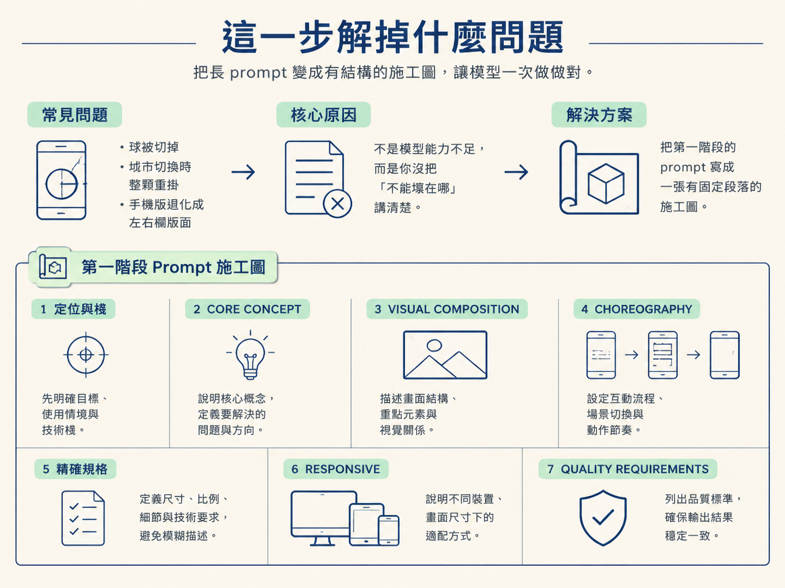
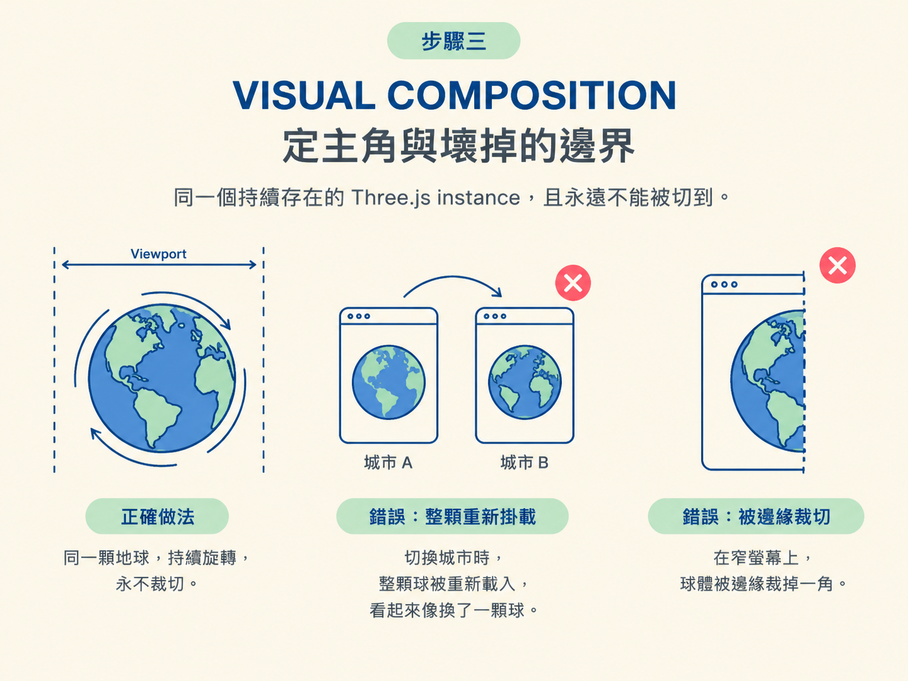
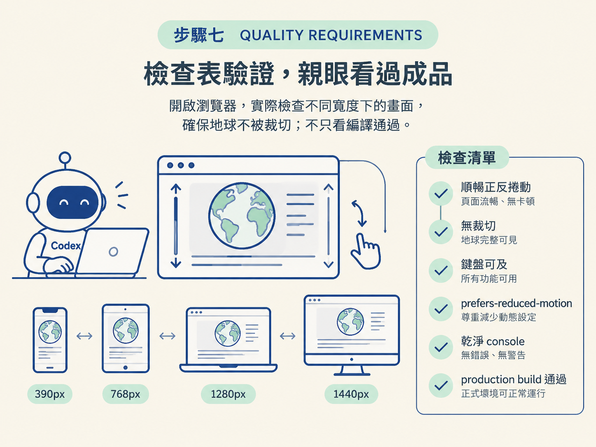

高複雜度的前端體驗，最怕的不是做不出來，而是第一版就長歪：球被切掉、城市切換時整顆重掛、手機上直接退化成一般左右欄版面。這些壞法都不是模型能力不足，而是你沒把「不能壞在哪」講清楚。
這一節的做法很具體：把第一階段那則 prompt 寫出來。它會很長，但不是流水帳，而是一張有固定段落的施工圖。段落寫對，Codex 才有機會一次生出一個「雛形正確」的版本，而不是給你一個需要回頭大改的東西。

landing-page-example。做完之後，你會拿到一個能捲動的 Vite 應用：球不會被切掉，捲動會自動帶你走過五座城市。
第一段只做兩件事：說清楚要蓋什麼、用什麼蓋。照原文寫出來是這樣：
Build an immersive, scroll-driven editorial Vite application called “One Turning World” in the `landing-page-example` folder.
Use React, TypeScript, Three.js, and Motion. The experience must be a single full-viewport, pinned spatial composition—not a conventional landing page made of sections, panels, cards, or columns.第二句裡的「不是傳統的落地頁」很關鍵。它用一句否定，先把「堆疊卡片、面板、欄位」這種預設做法排除掉。負面約束（明講不要什麼）在這裡跟正面描述一樣重要，因為模型的預設傾向就是生出你到處看得到的那種頁面。
接著用大寫段落標題分區。第一區講這個體驗在說什麼故事、由幾個狀態組成：
Tell the story of one day and one year through five cities:
1. Tokyo — Spring / sunrise
2. Cairo — Summer / rising daylight
3. Paris — Autumn / solar zenith
4. New York — Late Autumn / descending coral light
5. Ushuaia, Argentina — Deep Winter / sunset
Scrolling moves continuously through all five cities. Each city lasts five substantial scroll states, for 25 states total. The transition from one city to the next happens automatically through scrolling.這裡把抽象概念翻譯成可以數的規格：五座城市、各五個捲動狀態、總共 25 個狀態、轉場自動發生。這是整則 prompt 反覆使用的手法，目的是給 Codex 一個明確的驗收依據，而不是讓它去猜你心裡的「流暢」是什麼意思。
視覺區負責兩件事：誰是主角、它在什麼情況下不能壞。這個例子的主角是那顆地球：
Keep the interactive Earth centered and make it the hero of the experience.
- The scene fills the viewport.
- The globe remains the same persistent Three.js instance for the entire journey.
- It must never be cropped or clipped by the viewport.
- It can be dragged or rotated by the user.「同一個持續存在的 Three.js instance」和「永遠不能被切到」是兩個最容易做壞的點。常見的第一版會在城市切換時整顆重新掛載，看起來像換了一顆球；或者球在窄螢幕上被裁掉一角。把這兩條寫成硬性規定，等於先把最常見的失敗路徑堵死。

這一區規定球體周圍那些抽象物件怎麼生成。重點有三個：只用程序化幾何、材質、粒子與光，不使用生成的點陣圖；每個城市有自己的物件清單；物件要在空間裡真的移動，而不是靠插圖淡入淡出假裝轉場。它還要求東京與烏斯懷亞使用同步的後景／前景兩塊 canvas，並以帶遲滯的深度切層，避免物件在球前後來回閃爍。
為什麼要寫這麼細？因為「物件在空間中移動」和「兩張圖交叉淡入」畫面上說不定很像，但質感差很多。在 prompt 裡明講「用空間移動，不要用插圖 crossfade」，就能少走一大段冤枉路。
底部那條太陽軌跡是整則 prompt 裡規格最硬的一段，它連貝茲曲線的參數都直接給了：
Use an SVG quadratic Bézier path with approximately this geometry:
- ViewBox: 0 0 1000 126
- Path: M 52 106 Q 500 -76 948 106
- City solar positions: [0.015, 0.25, 0.5, 0.75, 0.985]
Calculate every city marker from the actual Bézier equation so the dots sit exactly on the curve.這段就是「精確規格」的示範。與其說「把城市圓點放在弧線上」，不如直接給 viewBox 與 path，再補一句「用曲線方程式算出每一個點，讓圓點精準落在線上」。這樣連驗收方式都附上了：座標要能對回曲線，而不是目測差不多就好。
響應式那一區的作用，是防止 Codex 在窄螢幕上偷懶退貨成一般的左右欄版面。它要求：手機上仍以地球為中心主角；保留底部精簡的太陽步進器；城市名稱要看得清楚；說明文字放在球下方，不能遮住步進器；主導覽不要被藏進抽屜裡。換句話說，它先把模型最可能偷懶的幾個地方都點名了。
最後一區是整則 prompt 的收尾，也是 Codex 會反覆回頭對照的清單：
- Smooth forward and reverse scrolling.
- No globe clipping at 390px, 768px, 1280px, or 1440px widths.
- Keyboard-accessible city navigation.
- Respect prefers-reduced-motion.
- Clean browser console.
- Production build must pass.
Visually inspect the actual experience at desktop and mobile sizes. Do not consider the task complete based only on compilation or source inspection.最後那兩句是整則 prompt 的靈魂。「用眼睛實際看過桌機與手機的成品」加上「不要只看編譯有沒有過就說做完了」，會直接改變 Codex 接下來幾十分鐘的行為：它會去開瀏覽器、來回捲動、在不同寬度下檢查，而不是編譯通過就交差。這個要求到了第五節，會被放大成一份完整的驗證迴圈。

送出這則 prompt 之後，你應該拿到一個跑得起來的 Vite 應用：捲動帶你走過五座城市，球從頭到尾是同一顆且不被裁切，底部有一條太陽路徑，城市之間會自動轉場。
若動畫還很生硬、也還沒有生成資產，那是正常的。第一階段的任務只是確認方向對了、把基礎站穩。這則 prompt 是你自己寫的還是改自別人的都無所謂，真正要帶走的是段落骨架，以及「精確規格＋品質要求＋要親眼看」這三個手法。
大型結構化 prompt 的骨架：一句定位與棧、CORE CONCEPT（故事拆成可數的狀態）、VISUAL COMPOSITION（主角與不能壞的邊界）、CHOREOGRAPHY（怎麼動、不要什麼）、精確規格（連曲線參數都給）、RESPONSIVE（防模型退回舊版型），最後用品質要求收尾並要求親眼看。把感覺翻譯成數字與否定句，模型才有依據。
第一版跑起來之後，畫面會有點「素」。下一節要把生成的地標資產疊上去，而且是在不重新設計既有 build 的前提下疊。那需要一則完全不同、針對性很強的 prompt。